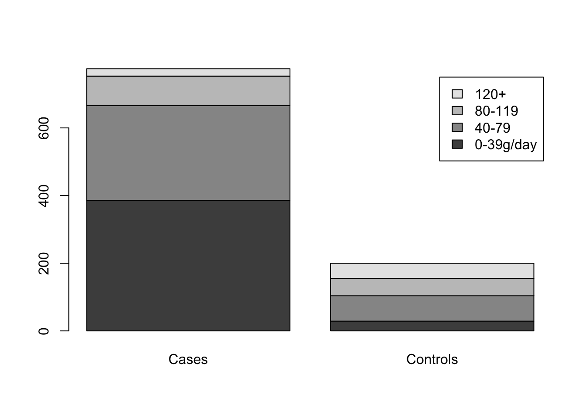

第 3 章 双样本位置参数
第一部分 两个独立总体
3.0.1 例子：零件疲劳强度测试
x <- c(82, 64, 53, 61, 59, 83, 76, 55, 70, 73)
y <- c(80, 60, 65, 91, 86, 84, 77, 93, 75)
##wilcoxon rank sum test
wilcox.test(x,y)##
## Wilcoxon rank sum exact test
##
## data: x and y
## W = 19, p-value = 0.03499
## alternative hypothesis: true location shift is not equal to 03.1 3.1 Brown-Mood中位数检验
- 检验两总体中位数是否相等；
- 计算两样本共同的中位数\(M_{XY}\)，用两个样本和\(M_{XY}\)比较后得到各个样本中大于和小于它的数目；
- 利用超几何分布
3.1.1 精确检验
z=read.table("data/salary.txt")
(salary1 <- z[,1][z[,2]==1]) #样本1## [1] 6864 7304 7477 7779 7895 8348 8461 9553 9919 10073 10270 11581
## [13] 13472 13600 13962 15019 17244(salary2 <- z[,1][z[,2]==2]) #样本2## [1] 10276 10533 10633 10837 11209 11393 11864 12040 12642 12675 13199 13683
## [13] 14049 14061 16079par(mfrow=c(1,3)) #箱线图
boxplot(salary1,ylim=c(7000,17000))
boxplot(salary2,ylim=c(7000,17000))
boxplot(z[,1],ylim=c(7000,17000))
k=unique(z[,2]); # 样本编号
(m=median(z[,1])); # 中位数## [1] 11301m1=NULL;m2=NULL
for(i in k){
m1=c(m1,sum(z[z[,2]==i,1]>m)) # 大于中位数的个数
m2=c(m2,sum(z[z[,2]==i,1]<m)) # 小于等于中位数的个数
}
(C=rbind(m1,m2))## [,1] [,2]
## m1 6 10
## m2 11 5##H1:Mx<My
phyper(6,17,15,16) # 利用超几何分布计算概率 # phyper(a,m,n,a+b)## [1] 0.07780674fisher.test(C,alt="less") # 使用fisher.test函数##
## Fisher's Exact Test for Count Data
##
## data: C
## p-value = 0.07781
## alternative hypothesis: true odds ratio is less than 1
## 95 percent confidence interval:
## 0.000000 1.166386
## sample estimates:
## odds ratio
## 0.28485863.2 3.2 Wilcoxon秩和检验
- 利用更多的关于样本点相对大小的信息
3.2.1 *例：Wilcoxon Test for Stochastic Ordering of Alternatives
#(Esophageal Cancer). This example is based on the case control study of esophageal cancer in Ile-et-Vilaine, France (Breslow et al. 1980). These data are available in the datasets package. We test the hypothesis that alcohol consumption is the same in the two groups, using as our dataset a sample of cases and controls
library(datasets)
data(esoph)
x1<-rep(esoph$alcgp,esoph$ncases)
y1<-rep(esoph$alcgp,esoph$ncontrols)
z1<-c(x1,y1)
w1<-c(rep(1,length(x1)),rep(0,length(y1)))
barplot(table(z1,w1),names.arg=c('Cases','Controls'),legend.text=levels(esoph$alcgp))
(x1<-as.numeric(x1))## [1] 4 1 2 2 2 2 4 4 4 4 1 2 2 2 2 2 2 2 2 2 2 2 2 2 2 2 2 2 2 2 2 3 3 3 3 3 3
## [38] 3 3 3 3 3 3 4 4 4 4 4 4 4 4 4 4 4 4 4 1 1 1 1 1 1 1 1 1 1 1 1 2 2 2 2 2 2
## [75] 2 2 2 2 2 2 2 2 2 2 2 2 2 2 2 2 3 3 3 3 3 3 3 3 3 3 3 3 3 3 3 3 3 3 3 3 3
## [112] 3 3 3 4 4 4 4 4 4 4 4 4 4 4 4 4 4 4 4 4 4 1 1 1 1 1 1 1 1 1 1 1 2 2 2 2 2
## [149] 2 2 2 2 2 2 2 2 2 2 2 2 2 2 2 2 2 2 2 2 3 3 3 3 3 3 3 3 3 3 3 3 3 4 4 4 4
## [186] 4 4 1 1 1 1 2 2 2 2 3 3 4 4 4(y1<-as.numeric(y1))## [1] 1 1 1 1 1 1 1 1 1 1 1 1 1 1 1 1 1 1 1 1 1 1 1 1 1 1 1 1 1 1 1 1 1 1 1 1 1
## [38] 1 1 1 1 1 1 1 1 1 1 1 1 1 1 1 1 1 1 1 1 1 1 1 1 2 2 2 2 2 2 2 2 2 2 2 2 2
## [75] 2 2 2 2 2 2 2 2 2 2 2 2 2 2 2 2 2 2 2 2 2 2 2 2 2 2 2 2 2 2 2 2 3 3 3 3 3
## [112] 4 4 4 4 1 1 1 1 1 1 1 1 1 1 1 1 1 1 1 1 1 1 1 1 1 1 1 1 1 1 1 1 1 1 1 1 1
## [149] 1 1 1 1 1 1 1 1 1 1 1 1 1 1 1 1 1 1 1 1 1 1 1 1 1 1 1 1 1 1 1 1 1 1 1 1 1
## [186] 1 1 1 1 1 1 1 1 1 1 1 1 1 1 1 1 1 1 2 2 2 2 2 2 2 2 2 2 2 2 2 2 2 2 2 2 2
## [223] 2 2 2 2 2 2 2 2 2 2 2 2 2 2 2 2 2 2 2 2 2 2 2 2 2 2 2 2 2 2 2 2 2 2 2 2 2
## [260] 2 2 2 2 2 2 2 2 2 2 2 2 2 2 2 2 2 2 2 2 3 3 3 3 3 3 3 3 3 3 3 3 3 3 3 3 3
## [297] 3 3 3 4 4 4 4 4 4 1 1 1 1 1 1 1 1 1 1 1 1 1 1 1 1 1 1 1 1 1 1 1 1 1 1 1 1
## [334] 1 1 1 1 1 1 1 1 1 1 1 1 1 1 1 1 1 1 1 1 1 1 1 1 1 1 1 1 1 1 1 1 1 1 1 1 1
## [371] 1 1 1 1 1 1 1 1 1 1 1 1 2 2 2 2 2 2 2 2 2 2 2 2 2 2 2 2 2 2 2 2 2 2 2 2 2
## [408] 2 2 2 2 2 2 2 2 2 2 2 2 2 2 2 2 2 2 2 2 2 2 2 2 2 2 2 2 2 2 2 2 2 2 2 2 3
## [445] 3 3 3 3 3 3 3 3 3 3 3 3 3 3 3 3 3 3 3 3 3 3 3 3 3 3 4 4 1 1 1 1 1 1 1 1 1
## [482] 1 1 1 1 1 1 1 1 1 1 1 1 1 1 1 1 1 1 1 1 1 1 1 1 1 1 1 1 1 1 1 1 1 1 1 1 1
## [519] 1 1 1 1 1 1 1 1 1 1 1 1 1 1 1 1 1 1 1 1 1 1 1 1 1 1 1 1 1 1 1 2 2 2 2 2 2
## [556] 2 2 2 2 2 2 2 2 2 2 2 2 2 2 2 2 2 2 2 2 2 2 2 2 2 2 2 2 2 2 2 2 2 2 2 2 2
## [593] 2 2 2 2 2 2 2 2 2 2 2 2 2 2 2 2 2 2 2 3 3 3 3 3 3 3 3 3 3 3 3 3 3 3 3 3 3
## [630] 3 4 4 4 4 4 4 4 4 1 1 1 1 1 1 1 1 1 1 1 1 1 1 1 1 1 1 1 1 1 1 1 1 1 1 1 1
## [667] 1 1 1 1 1 1 1 1 1 1 1 1 1 1 1 1 1 1 1 1 1 1 1 1 1 1 1 1 1 1 1 1 2 2 2 2 2
## [704] 2 2 2 2 2 2 2 2 2 2 2 2 2 2 2 2 2 2 2 2 2 2 2 3 3 3 3 3 3 3 3 3 3 3 3 3 3
## [741] 3 3 4 4 1 1 1 1 1 1 1 1 1 1 1 1 1 1 1 1 1 1 1 1 1 1 1 2 2 2 2 2 2 2 2wilcox.test(x1,y1)##
## Wilcoxon rank sum test with continuity correction
##
## data: x1 and y1
## W = 115612, p-value < 2.2e-16
## alternative hypothesis: true location shift is not equal to 03.2.2 *例： Analyses for a Shift in Location
#(Generated t5-Data). The following are two samples generated from a t-distribution with 5 degrees of freedom. The true shift parameter was set at the value 8.
x1<-round(rt(11,5)*10+42,1)
y1<-round(rt(9,5)*10+50,1)
sort(x1)## [1] 16.0 25.2 27.9 28.0 30.4 37.0 43.7 44.6 44.6 45.4 60.8sort(y1)## [1] 17.1 42.8 43.3 46.0 46.9 50.6 55.1 68.2 70.3wilcox.test(x1,y1,exact=TRUE)## Warning in wilcox.test.default(x1, y1, exact = TRUE): cannot compute exact p-
## value with ties##
## Wilcoxon rank sum test with continuity correction
##
## data: x1 and y1
## W = 24, p-value = 0.05743
## alternative hypothesis: true location shift is not equal to 0wilcox.test(x1,y1,exact=FALSE,correct=FALSE)##
## Wilcoxon rank sum test
##
## data: x1 and y1
## W = 24, p-value = 0.05262
## alternative hypothesis: true location shift is not equal to 0wilcox.test(y1,x1,conf.int=TRUE)## Warning in wilcox.test.default(y1, x1, conf.int = TRUE): cannot compute exact p-
## value with ties## Warning in wilcox.test.default(y1, x1, conf.int = TRUE): cannot compute exact
## confidence intervals with ties##
## Wilcoxon rank sum test with continuity correction
##
## data: y1 and x1
## W = 75, p-value = 0.05743
## alternative hypothesis: true location shift is not equal to 0
## 95 percent confidence interval:
## -0.400037 25.699973
## sample estimates:
## difference in location
## 13.600033.2.3 3.2.1 假设检验
wilcox.test(salary1,salary2,alt="less")##
## Wilcoxon rank sum exact test
##
## data: salary1 and salary2
## W = 69, p-value = 0.01352
## alternative hypothesis: true location shift is less than 0pwilcox(69,15,17)## [1] 0.01352166wilcox.test(salary1,salary2)##
## Wilcoxon rank sum exact test
##
## data: salary1 and salary2
## W = 69, p-value = 0.02704
## alternative hypothesis: true location shift is not equal to 0wilcox.test(salary1,salary2,exact=F)##
## Wilcoxon rank sum test with continuity correction
##
## data: salary1 and salary2
## W = 69, p-value = 0.02851
## alternative hypothesis: true location shift is not equal to 0wilcox.test(salary1,salary2,exact=F,cor=F)##
## Wilcoxon rank sum test
##
## data: salary1 and salary2
## W = 69, p-value = 0.02717
## alternative hypothesis: true location shift is not equal to 0wilcox.test(salary1,salary2,exact=F,alt="less")##
## Wilcoxon rank sum test with continuity correction
##
## data: salary1 and salary2
## W = 69, p-value = 0.01425
## alternative hypothesis: true location shift is less than 0wilcox.test(salary1,salary2,exact=F,alt="less",cor=F)##
## Wilcoxon rank sum test
##
## data: salary1 and salary2
## W = 69, p-value = 0.01358
## alternative hypothesis: true location shift is less than 03.2.4 3.2.2 置信区间
(D=sort(as.vector(outer(salary1,salary2,"-"))))## [1] -9215 -8775 -8602 -8300 -8184 -7731 -7618 -7197 -7185 -6819 -6757 -6745
## [13] -6584 -6572 -6526 -6379 -6335 -6282 -6270 -6206 -6166 -6160 -6154 -6006
## [25] -5904 -5895 -5811 -5809 -5788 -5778 -5722 -5713 -5701 -5600 -5588 -5420
## [37] -5371 -5338 -5335 -5304 -5222 -5198 -5176 -5165 -5000 -4896 -4863 -4851
## [49] -4780 -4747 -4738 -4736 -4563 -4560 -4529 -4508 -4498 -4496 -4387 -4345
## [61] -4327 -4294 -4261 -4214 -4181 -4145 -4142 -4130 -4130 -4089 -4085 -3988
## [73] -3976 -3973 -3969 -3916 -3905 -3791 -3779 -3769 -3764 -3732 -3692 -3669
## [85] -3646 -3614 -3610 -3579 -3533 -3516 -3498 -3430 -3413 -3412 -3403 -3360
## [97] -3329 -3314 -3280 -3229 -3156 -3126 -3122 -3089 -3058 -3056 -3045 -2972
## [109] -2942 -2932 -2929 -2861 -2854 -2799 -2756 -2754 -2748 -2738 -2723 -2638
## [121] -2607 -2602 -2569 -2497 -2489 -2487 -2480 -2479 -2468 -2405 -2381 -2376
## [133] -2372 -2311 -2285 -2185 -2172 -2121 -2117 -2102 -2072 -1967 -1945 -1928
## [145] -1840 -1815 -1791 -1770 -1656 -1618 -1594 -1474 -1320 -1290 -1284 -1136
## [157] -1123 -1094 -1080 -1061 -1060 -980 -939 -918 -764 -723 -714 -614
## [169] -589 -577 -567 -560 -461 -460 -459 -449 -363 -357 -283 -263
## [181] -211 -203 -99 -87 -83 -6 188 273 279 372 401 744
## [193] 763 797 830 925 948 958 958 970 1048 1165 1287 1305
## [205] 1320 1336 1432 1560 1608 1736 1820 1922 2079 2098 2207 2263
## [217] 2344 2377 2391 2569 2635 2753 2763 2839 2939 2967 2979 3067
## [229] 3125 3155 3183 3195 3196 3324 3329 3429 3561 3626 3686 3810
## [241] 4045 4182 4386 4486 4569 4602 4743 5204 5380 5851 6035 6407
## [253] 6611 6711 6968(Wa=qwilcox(0.025,17,15))## [1] 76c(D[Wa],D[17*15+1-Wa])## [1] -3916 -2633.4 3.4 成对数据的检验
- 成对数据的差，使用符号检验、Wilcoxon符号秩检验
3.4.1 例子：实施管理前后
x2 <- c(1.2,-0.6,-0.3,1.1,-0.2,-0.2,-0.8,0.3,-0.2,-0.1)
library(BSDA)## Loading required package: lattice##
## Attaching package: 'BSDA'## The following object is masked from 'package:datasets':
##
## OrangeSIGN.test(x2,md=0,altervative="two.sided",conf.level=0.95)##
## One-sample Sign-Test
##
## data: x2
## s = 3, p-value = 0.3438
## alternative hypothesis: true median is not equal to 0
## 95 percent confidence interval:
## -0.5026667 0.8404444
## sample estimates:
## median of x
## -0.2
##
## Achieved and Interpolated Confidence Intervals:
##
## Conf.Level L.E.pt U.E.pt
## Lower Achieved CI 0.8906 -0.3000 0.3000
## Interpolated CI 0.9500 -0.5027 0.8404
## Upper Achieved CI 0.9785 -0.6000 1.1000wilcox.test(x2,md=0,altervative="two.sided",conf.level=0.95)## Warning in wilcox.test.default(x2, md = 0, altervative = "two.sided", conf.level
## = 0.95): cannot compute exact p-value with ties##
## Wilcoxon signed rank test with continuity correction
##
## data: x2
## V = 24.5, p-value = 0.7982
## alternative hypothesis: true location is not equal to 03.4.2 例子：病人血压
bp <- read.table("data/bp.txt")
x <- bp$V1
y <- bp$V2
wilcox.test(x,y,paired = T,alt="greater")##
## Wilcoxon signed rank exact test
##
## data: x and y
## V = 49, p-value = 0.01367
## alternative hypothesis: true location shift is greater than 0psignrank(sum(rank(x-y)[x<y]),length(x))## [1] 0.013671883.5 3.5 McNemar检验
- 配对的二元取值数据
- 二维列联表，卡方检验统计量
- 是Cochran’s Q检验的特例
3.5.1 精确检验
Cochran=function(x){
Xpchs=function(n=7,k=5){
#output(n_1,..,n_k)-all possible combination with n_1+...+n_k=n
temp=cbind(n:0,0:n);
if (k>=3){
for (j in 3:k){
a1=temp[,1:(j-2)];a2=temp[,j-1];temp0=NULL;
for (i in 1:length(a2)){
if (j==3) temp0=rbind(temp0,cbind(rep(a1[i],a2[i]+1),a2[i]:0,0:a2[i]))
if (j>3) temp0=rbind(temp0,cbind(matrix(rep(a1[i,],a2[i]+1),
ncol=j-2,byrow=T),a2[i]:0,0:a2[i]))
}
temp=temp0
}
}
temp
}
Xpchs2=function(n=4,k=2){
#output: all 0 and 1 columns, with n-k 0s and k- 1s columns
Xchoose=function(n=4,k=2){
if (k==0) aa=NULL
if (k>=1){
aa=matrix(1:n,ncol=1);m=0;
if(k>1){
for(i in 2:k){
m=m+1;m1=nrow(aa);
aa=cbind(matrix(rep(aa,each=n),ncol=m),rep(1:n,m1))
aa=aa[(aa[,m+1]>aa[,m]),]
}
}
};
aa
};
e01=Xchoose(n,k)
temp=matrix(0,nrow=nrow(e01),ncol=n);
for (j in 1:nrow(temp)){
if (k==1) temp[j,e01[j]]=1
if (k>1) temp[j,e01[j,]]=1
};
temp
}
n=nrow(x);k=ncol(x);
L=apply(x,1,sum);R=apply(x,2,sum);N=sum(R);
Q0=(k*(k-1)*sum((R-mean(R))^2))/(k*N-sum(L^2));
Ni=NULL;
for (i in 1:k-1) Ni=c(Ni,sum(L==i));
Ni=Ni[-1];
eye0=Xpchs2(k,1);temp0=Xpchs(Ni[1],nrow(eye0));Ri0=temp0%*%eye0;
prob0=factorial(Ni[1])/apply(factorial(temp0),1,prod)*(1/nrow(eye0))^(Ni[1]);
if (length(Ni)>1){
for (i in 2:length(Ni)){
eye1=Xpchs2(k,i);
temp1=Xpchs(Ni[i],nrow(eye1));
Ri1=temp1%*%eye1;
prob1=factorial(Ni[i])/apply(factorial(temp1),1,prod)*(1/nrow(eye1))^(Ni[i])
Ri0=matrix(rep(t(Ri0),nrow(Ri1)),byrow=T,ncol=k)+
matrix(rep(Ri1,each=nrow(Ri0)),ncol=k)
prob0=rep(prob0,length(prob1))*rep(prob1,each=length(prob0))
}
}
xa=k*(k-1)*apply((Ri0-apply(Ri0,1,mean))^2,1,sum)/(k*N-sum(L^2))
nn=length(xa);xa0=sort(unique(xa));xacnt=NULL;
for (i in 1:length(xa0)) xacnt=c(xacnt,length(xa[xa==xa0[i]]));
plot(xa0,xacnt/nn,cex=0.5,ylab="density function",xlab="value of Cochran statistics");
for (i in 1:length(xa0)){
points(c(xa0[i],xa0[i]),c(xacnt[i]/nn,0),type="l",lwd=2)
}
list(unique(xa),cbind(rbind(t(x),L),c(R,N)),Q=Q0,
Exactp=sum(prob0[(xa>=Q0)]),pvalue=pchisq(Q0,k-1,low=F))
}
treat=read.table("data/athletefootp.txt");
Cochran(treat[,-1])
## [[1]]
## [1] 24.0000000 20.1666667 16.6666667 13.5000000 10.6666667 8.1666667
## [7] 6.0000000 4.1666667 2.6666667 1.5000000 0.6666667 0.1666667
## [13] 0.0000000
##
## [[2]]
## [,1] [,2] [,3] [,4] [,5] [,6] [,7] [,8] [,9] [,10] [,11] [,12] [,13] [,14]
## V2 1 1 1 1 1 1 1 1 1 1 0 0 0 0
## V3 1 1 1 1 1 1 0 0 0 0 1 1 1 1
## L 2 2 2 2 2 2 1 1 1 1 1 1 1 1
## [,15] [,16] [,17] [,18] [,19] [,20] [,21] [,22] [,23] [,24] [,25] [,26]
## V2 0 0 0 0 0 0 0 0 0 0 0 0
## V3 1 1 1 1 1 1 1 1 1 1 1 1
## L 1 1 1 1 1 1 1 1 1 1 1 1
## [,27] [,28] [,29] [,30] [,31] [,32] [,33] [,34] [,35] [,36] [,37] [,38]
## V2 0 0 0 0 0 0 0 0 0 0 0 0
## V3 1 1 1 1 0 0 0 0 0 0 0 0
## L 1 1 1 1 0 0 0 0 0 0 0 0
## [,39] [,40] [,41]
## V2 0 0 10
## V3 0 0 26
## L 0 0 36
##
## $Q
## [1] 10.66667
##
## $Exactp
## [1] 0.00154388
##
## $pvalue
## [1] 0.0010908353.5.2 大样本近似
x=read.table("data/athletefootp.txt");
x=x[,-1];
n12=sum(x[((x[,1]==0)&(x[,2]==1)),])
n21=sum(x[((x[,1]==1)&(x[,2]==0)),])
McNemar=(n12-n21)^2/(n12+n21);
pvalue=1-pchisq(McNemar,df=1)
list(McNemar=McNemar,pvaluetwosided=pvalue)## $McNemar
## [1] 10.66667
##
## $pvaluetwosided
## [1] 0.0010908353.6 3.6 Cohen’s Kappa系数
- 度量两位评估者之间评估一致性的指标
x=read.table("data/music.txt");
w=matrix(x[,3],byrow=T,ncol=2);
I=nrow(w);n=sum(w);w=w/n;
pa=sum(diag(w));
pe=sum(apply(w,1,sum)*apply(w,2,sum))
(kap=(pa-pe)/(1-pe))## [1] 0.5098039A=sum(diag(w)*(1-(apply(w,1,sum)+apply(w,2,sum))*(1-kap))^2)
tempB=matrix(rep(apply(w,1,sum),I)+rep(apply(w,2,sum),each=I),byrow=T,ncol=I)
diag(tempB)=0;
B=(1-kap)^2*sum(w*tempB^2)
CC=(kap-pe*(1-kap))^2;
ASE=sqrt((A+B-CC)/(1-pe)^2/n)
list(kappa=kap,ASE=ASE,CI=c(kap-1.96*ASE,kap+1.96*ASE))## $kappa
## [1] 0.5098039
##
## $ASE
## [1] 0.08133101
##
## $CI
## [1] 0.3503951 0.6692127